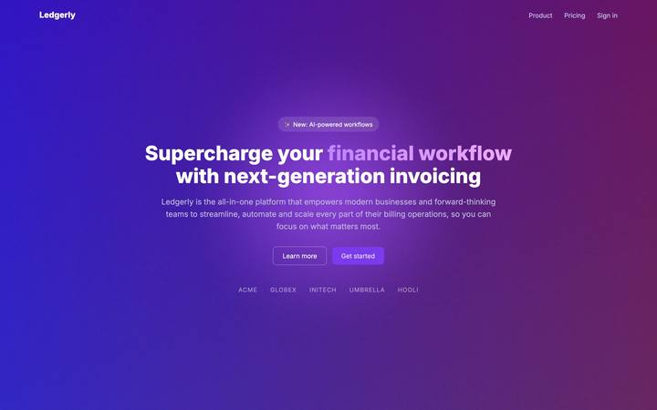
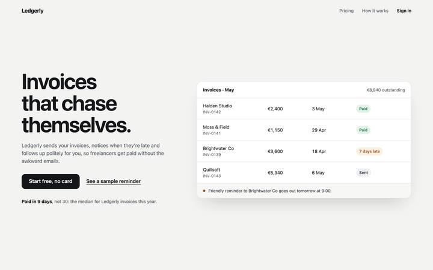
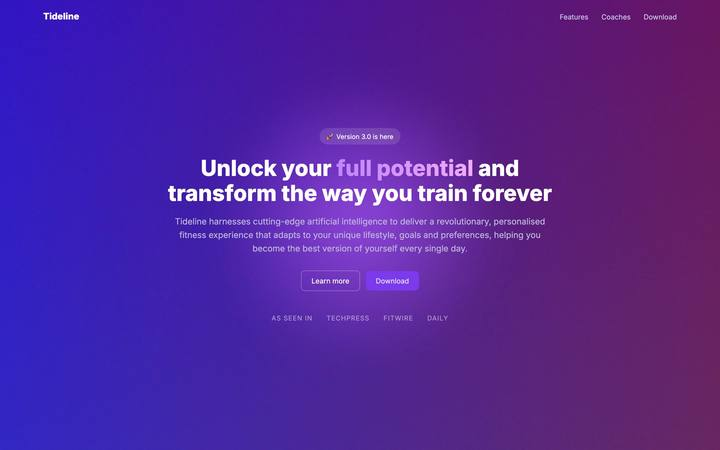
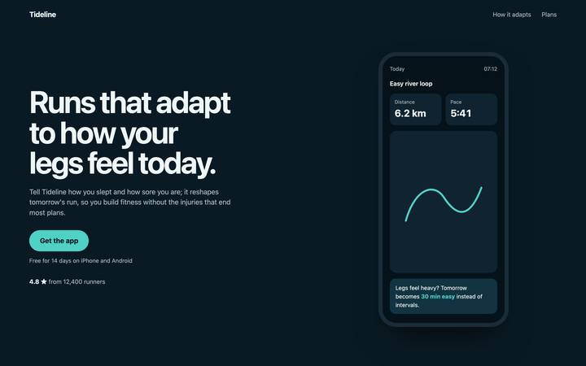
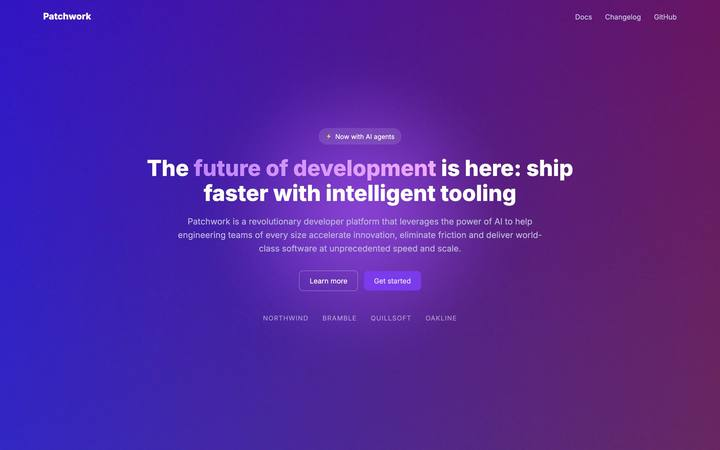
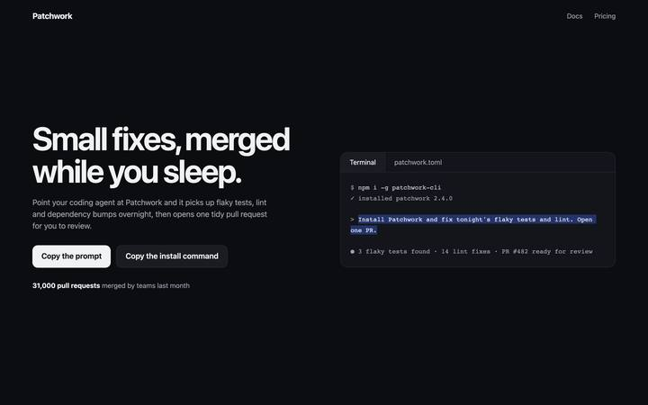

Ledgerly
Invoicing for freelancers · product UI as the hero


Largest paint1.12 s → 0.24 s
Failures4 → 0
Warnings16 → 0
Headline7 words → 4
An agent skill for React / Next.js + Tailwind. It audits the hero you already have in a real browser, rebuilds it from evidence, and measures it again, so every claim in the hand-off is a number.
npx skills add sridhar-raj/hero-revampEach "before" is the template hero most generated pages ship: vague copy, a gradient word, a purple glow, a ghost primary button, a lazy background photo, blocking fonts. Measured on Slow 4G with a 4× slower CPU, median of three loads, at 1440×900 and 390×844. The products are made up.
Invoicing for freelancers · product UI as the hero


A running coach app · the app working on a phone


A developer CLI · an agent-native "Copy the prompt" CTA


These after pages are plain HTML/CSS so the demo stays light. In a real project the skill can put an OriginKit component in the visual slot, fetched with your own OriginKit login (CLI) or MCP; nothing from OriginKit ships in this repo.